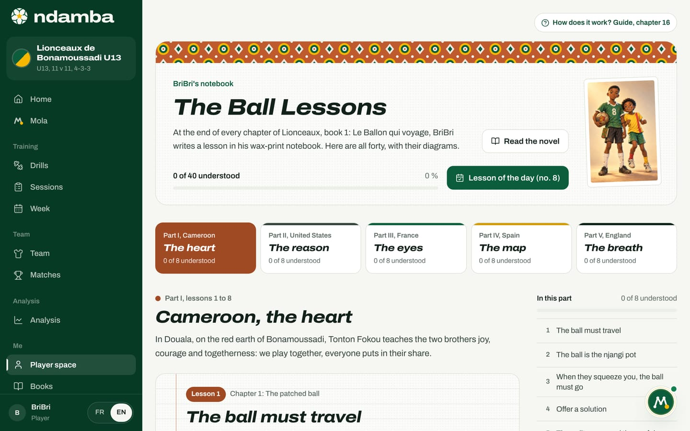
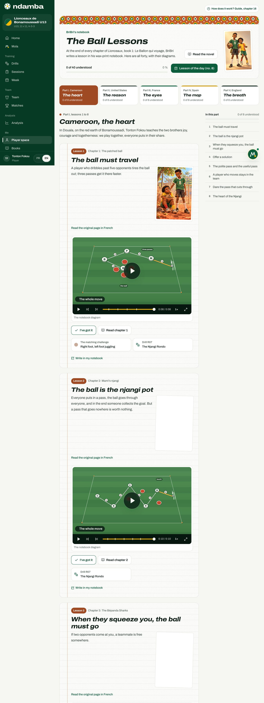
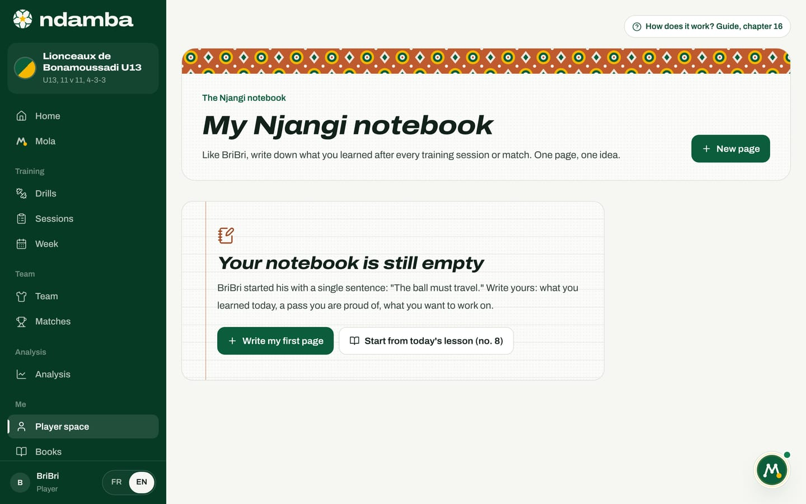
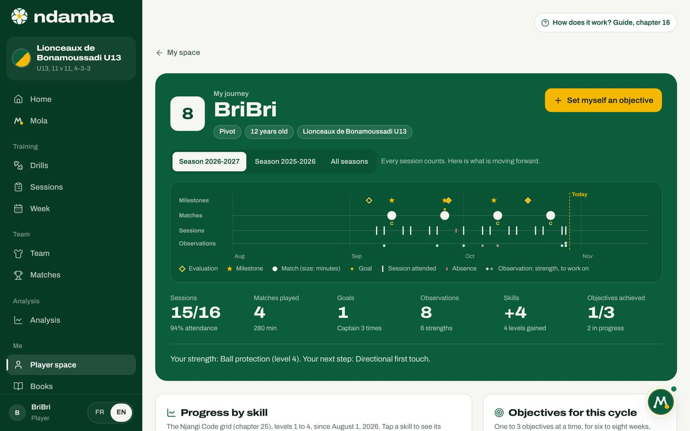

The Ball Lessons, the notebook and the journey
The 40 Lessons of the Ball taken from the novel, the lesson of the day and the "I’ve got it" button; the Njangi notebook where players write down what they learn; the journey that keeps their progress season after season.
9 min read
A game model is not learned on the pitch alone. It is also learned through simple words a child can repeat, a story that makes them want more, and the habit of asking, after every match, what they understood. This chapter covers three tools built for exactly that. The Lessons of the Ball tell the Njangi method to the youngest players, through BriBri’s notebook in the novel. The Njangi notebook lets the player write their own lessons. The journey keeps a record of everything they build, season after season, so nothing is lost when they move up an age group or change coach.
The 40 Lessons of the Ball
In Lionceaux, book 1: Le Ballon qui voyage, every chapter ends with a page from BriBri’s wax-print notebook: a football lesson in a few lines, often with a diagram. There are forty chapters, so forty lessons. In the app they are called the Ball Lessons (Leçons du Ballon in French). Ndamba gathers them in the player space, with the text from the book, the diagram, the chapter illustration and what to do next.
The lessons follow the two brothers’ journey, in five parts. Each country brings one piece of the Njangi.
| Part | Country | Piece | Lessons |
|---|---|---|---|
| I | Cameroon | The heart | 1 to 8 |
| II | United States | The reason | 9 to 16 |
| III | France | The eyes | 17 to 24 |
| IV | Spain | The map | 25 to 32 |
| V | England | The breath | 33 to 40 |
There are three ways in: the The Ball Lessons link at the bottom of the player space, the All lessons link on the home page, or the lesson link on a challenge card (Ball Lesson no. 31, for example).


At the top, the BriBri’s notebook header reminds you where the lessons come from, with the Read the novel button and a portrait of the two brothers. The counter ("0 of 40 understood") moves up with every lesson understood, and the Lesson of the day (no. 8) button scrolls straight to today’s lesson.
Below sit five tabs, like the dividers of an exercise book: Part I, Cameroon, The heart, and how many lessons in that part are understood ("0 of 8 understood"). Only one part shows at a time, which keeps the page light on a small data plan. Each part opens with a sentence about its country, then its eight lessons. At the bottom, the Next part: United States button moves on. On a large screen, the In this part column lists the eight titles and ticks those understood.
A page of the notebook
Each lesson looks like a page of a lined exercise book:
- the Lesson 1 label and the chapter it comes from ("Chapter 1: The patched ball");
- the lesson title, written as if by hand ("The ball must travel");
- the lines of the notebook, with the chapter illustration pinned beside them;
- The notebook diagram, the situation on a pitch, played as an animation: tap play and the players move, step by step, with a caption for each step (39 lessons out of 40 have one);
- the I’ve got it and Read chapter 1 buttons, the second opening the chapter in the novel;
- The matching challenge, when a challenge in the player space trains the same idea, and the linked drill from The Njangi Code (for example Drill R07, The Njangi Rondo);
- the Write in my notebook link.


The novel is written in French. In the English version of the app, each lesson shows as a short summary in English, and the original French page is one tap away, under Read the original page in French.
The lesson of the day
Every day, Ndamba picks one lesson among those with a diagram. The choice depends only on the date: every player has the same lesson of the day, so a coach can talk about it to the whole group at training. It appears on the home page (Lesson of the day), in the rotating line at the top of the home page, on the novel card (the chapter of today’s lesson) and in the still-empty notebook (Start from today’s lesson).
When is a lesson understood?
The player decides. When they have read the lesson, looked at the diagram and feel they could explain it, they tap I’ve got it. The button turns into Got it, saved, the page carries the Understood label, and the counters move: the part’s, the 40 lessons’, and the Lessons box on the My progress card on the home page. A second tap removes the mark.
There is no mark out of ten and no quiz, and that is on purpose: the child is not graded on their reading. For a parent or a coach, a good rule is to ask the child to explain the lesson in their own words, or to do the matching challenge, before tapping I’ve got it. The marks are kept in the browser of the device. They are part of the backup exported from Settings, which can carry them to another device, and Erase everything deletes them.
The Njangi notebook
In the novel, BriBri writes down after every match what he has learned. The Njangi notebook gives the player the same habit: one page, one idea. Open it with the My Njangi notebook link at the bottom of the player space, or with the notebook card on the home page.


To write a page:
- Tap New page (or Write my first page when the notebook is empty).
- Give it a Title (for example "My pass that cut through") and check the Date.
- Write under What I learned. A few lines are enough. To get going, tap one of the starters under To help you start: "Today I learned", "A pass I am proud of:", "Tomorrow I want to work on", "In my place, BriBri would have".
- If the page is about a lesson, pick it under Linked lesson (optional).
- Tap Save. The page appears at the top of the notebook, with its date and the label of the linked lesson.
From a lesson, the Write in my notebook link opens a new page straight away, linked to that lesson and carrying its title. When the notebook is empty, Start from today’s lesson does the same with the lesson of the day.
Each page is edited with the pencil and deleted with the bin, after a confirmation ("Delete this page?"), with Undo on offer for a few seconds. Beyond four pages, a search box appears (Search my notebook). The Print button puts the notebook on paper, headed with the player’s name, for example "BriBri’s Njangi notebook": something to keep, or to show the coach.
From 16, the same page becomes My player journal: plainer, with no link to the lessons, and with grown-up starters: "What worked:", "One action I keep:", "To adjust:", "To watch again on video:".
The journey, season after season
The journey answers a simple question: what has this player built? It brings together what the coach recorded (evaluations, observations, attendance, minutes played) and what the player set for themselves. The coach sees it from the player’s profile (chapter 10); the player sees their own through the My journey card, in the player space and on the home page. The first time, they link their profile to their record with the Who are you in the team? screen (chapter 15), which a parent sees as Which record is your child’s?. Without a team, the page explains that the journey grows once the coach adds the player to the squad.


At the top, the journey shows the number, the name, the position, the age and the team, then the season buttons (Season 2026-2027, Season 2025-2026, All seasons). A season runs from 1 August to 31 July. The season ribbon puts Milestones, Matches, Sessions and Observations on a single timeline, up to Today. Six figures follow: Sessions attended out of the total, with the attendance rate, Matches played and minutes, Goals (from the first goal, and always from 17), Observations (and how many were strengths), Skills (levels gained since the start of the season) and Objectives achieved. One sentence sums it up: "Your strength: Ball protection (level 4). Your next step: Directional first touch."
Further down, the player finds:
- Progress by skill: the ten skills of The Njangi Code grid, from 1 to 4. Tap one to see its curve, what is seen today and the next step.
- The journey, step by step: their story of the season, most recent first, with filters (All, Milestones, Evaluations, Observations, Matches, Sessions, Objectives).
- Objectives for this cycle: one to three objectives, for six to eight weeks, then a review.
- Your matches: the actions that make the team play, with no comparison with anyone else.
- Big moments: the first match, first start, first goal and a skill reaching level 3 or 4 are added on their own; the coach adds call-ups or moves to an older age group.
The journey adapts to age. Under 13, the page says so: "Every session counts. Here is what is moving forward." The coach’s ratings of a sequence are not shown to the child, and there is never a ranking. From 13 to 16, the page adds match markers, such as the share of passes completed. From 17, Season performance gives the detail per 90 minutes, and the sentence becomes "Your area to work on".

The player can neither edit nor delete what their coach wrote. They can, however, set their own objectives:
- Tap Set myself an objective.
- Under Linked to, choose A skill (for example Directional first touch) or A Njangi sub-index (for example Regain).
- Write The objective, in one sentence, or tap Use the suggestion.
- Keep the suggested Review date, or tap 6 weeks or 8 weeks.
- Tap Save the objective. It appears with the My objective label. An objective set by the coach shows too, with this reminder: "Your coach set this objective: you can see it here, and you will review it together."